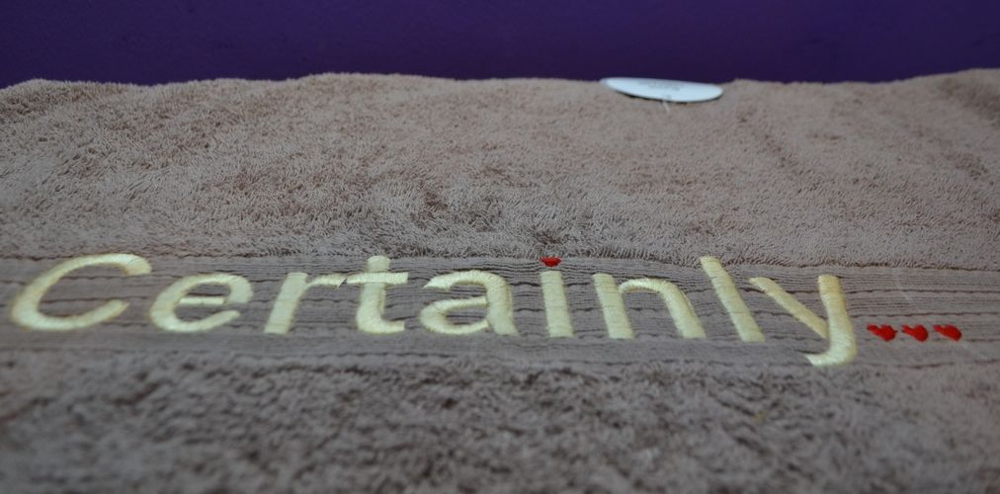

Вышивка на полотенце и халате на заказ Киев
Машинная вышивка на халате или полотенце - отличный способ сделать приятное близкому, коллеге или другу, а также способ подчеркнуть свою индивидуальность.
Почему именно вышивка на махровом полотенце
Машинная вышивка дарит великолепную возможность украсить халат или полотенце уникальным текстом или рисунком. Благодаря этому Вы получаете вещь в единичном экземпляре, которая будет «протюнингована» исключительно по вашему сценарию.Хотите написать в поисковике «полотенце с именем купить» или «именной халат Киев»? Нестоит тратить ваши деньги на вещь, которая будет еще у тысяч людей! Будьте индивидуальны! Вышивка на полотенце на заказ - этот то, что Вам нужно. Зачем слепо следовать толпе, когда можно заказать полотенца с вышивкой, изготовленные специально для Вас.Махровые халаты с вышивкой - решение такого сложного вопроса, как выбор подарка. Вашблизкий человек будет с теплом и радостью думать о Вас каждый раз, когда будет надеватьхалат с вышивкой, сделанной на заказ.Почему именно у нас стоит заказать вышивку на полотенце или халате
Работники «Машинной вышивки от аRтелье Киев» помогут Вам подобрать оптимальный шрифт, цвет ниток и размер, наиболее подходящий для гармоничного сочетания махрового полотенца/халата и вышивки. Все что нужно от Вас - имя, фраза, дата или какое-нибудь другое слово, которое вы хотите вышить на махровом халате или полотенце.Халат и полотенце с вышивкой: тонкости
При производстве вышивки мы используем только качественные вышивальные нитки, тем самым гарантируя качество и долговечность нашей продукции. При вышивке на махровом материале, применяется специальная пленка, которая ложится поверх области вышивания и служит для предотвращения возможности пробивания махрового ворса через стежки ниток. С изнаночной стороны используется специальный вышивальный флизелин, который надежно держит стежки вышивки и лишний раз упрочняет вашу уверенность в том, что вышивка будет долговечной.- Также вы не пожалеете, если прочитаете:
- Дизайн машинной вышивки: как создать?
- Где лучшие подарки? - У нас в ателье машинной вышивки!
- Как освоить машинную вышивку на коже
- Подсвети свой стиль: машинная вышивка, светящаяся в темноте
- Выбираем самый лучший подарок на Новый Год
- Сколько стоит сделать индивидуальные шевроны
- Хотите заказать компьютерную вышивку? Прочитайте инструкцию для заказа
- Вышивка сейчас Киев
- Нашивки, эмблемы, шевроны для школы на заказ
- Нашивки для ресторанов
- Модные нашивки на одежду
- Шевроны для охранной компании